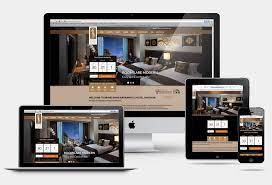

Hey there! I'm Michael Elias, a passionate and driven student at Bahir Dar University
, specializing in Information Systems. My journey as a web developer and my interest in
network line installation have fueled my dedication to creating seamless digital experiences.
Currently pursuing a degree in Information Systems at Bahir Dar University,
I have gained a solid foundation in various aspects of technology, including
web development and network infrastructure.

With a knack for crafting visually appealing and functional websites, I possess expertise in
front-end and back-end development. My proficiency in HTML, CSS, JavaScript, and
other programming languages enables me to breathe life into design concepts.
Collaborative Approach:
I firmly believe in the power of collaboration and teamwork. Throughout my academic and professional
endeavors, I have actively participated in team projects, enhancing my ability to work effectively
with diverse groups.
I thrive on solving complex problems and finding innovative solutions. My analytical thinking and
attention to detail allow me to identify and address technical challenges effectively,
ensuring optimal performance and user satisfaction.In the ever-evolving world of technology,
I recognize the significance of continuous learning. I stay updated with the
latest industry trends, tools, and best practices to incorporate cutting-edge
techniques in my work.My primary focus is on delivering results that meet and exceed
client expectations. I prioritize understanding client needs, ensuring clear
communication, and incorporating feedback throughout the development process.
Aesthetics play a vital role in the digital realm. I have a keen eye for design,
allowing me to create visually captivating interfaces that engage and inspire
users while maintaining a seamless user experience. Recognizing the importance
of mobile-friendly experiences, I implement responsive design principles to
ensure that websites are accessible and visually appealing across various
devices and screen sizes. I possess strong project management skills, enabling
me to organize tasks efficiently, set realistic timelines, and deliver projects
within the agreed-upon deadlines while maintaining the highest quality standards.
Adaptive by nature, I comfortably navigate diverse environments, readily adjust to
changing requirements, and embrace new technologies. This adaptability allows me to
deliver exceptional results under various circumstances.
Effective communication is crucial in any successful collaboration. I possess
excellent interpersonal skills, enabling me to articulate ideas clearly, actively
listen to client requirements, and work collaboratively within a team.
Ensuring an exceptional user experience is a top priority for me. I conduct
comprehensive user research, implement intuitive and user-friendly
interfaces, and constantly seek feedback to optimize performance and usability.
Aside from website development and network line installation, I am passionate about
leveraging technology for broader digital solutions. I am eager to explore emerging
technologies and their potential impact on businesses and industries.
Both designing & coding parts will be done.

With reliable skill
User experience is central to the web designing process.
Heeey and its responsive ONE
Web is core for current marketing zones
Combining different programming language skills
Basic ones used for this web

Without fatigue and boredom

Let's create an updated marketing link
A passionate coder currently pursuing my education in Information
Systems at Bahir Dar University. I take immense pride in my Ethiopian heritage,
and my faith as a Christian guides me through my life's journey. Beyond my
academic pursuits, I have a wide range of interests and hobbies that shape my identity.
One of my deepest passions is coding. I find immense joy in the art of programming and the
endless possibilities it offers. It's not just a skill but a part of who I am, and I continually
seek to expand my knowledge and hone my coding abilities. I enjoy the creative process of building
websites, transforming lines of code into functional, user-friendly platforms that can make a real
impact in the digital world. In addition to my love for coding, I have a deep appreciation for
the world of cinema. Watching movies is not just a pastime for me; it's a form of art appreciation,
storytelling, and a source of inspiration. Whether it's a thought-provoking drama, an action-packed
thriller, or a heartwarming family film, I relish the opportunity to immerse myself in different
narratives and explore diverse perspectives.
As a Christian, my faith plays a significant role in
shaping my values and how I interact with the world around me. It instills in me a sense of purpose,
compassion, and a commitment to making a positive impact in my community.
I believe in the power of love, kindness, and forgiveness as guiding principles in my life.
I take immense pride in my Ethiopian heritage, a nation with a rich history, vibrant culture,
and breathtaking landscapes. The beauty of Ethiopia, from its ancient cities to
its majestic landscapes, inspires a deep sense of attachment and commitment to
preserving and promoting our cultural heritage. Through my journey in information
systems and web development, I aspire to bridge the gap between technology and
culture, using my skills to create websites and digital platforms that celebrate
Ethiopia's unique identity while connecting with the global community. In my free time,
I enjoy exploring new places, trying different cuisines, and experiencing the world
beyond the digital realm. Traveling allows me to broaden my horizons, meet new people,
and gain fresh perspectives that I can apply to my coding projects and daily life.
Overall,
I am a curious and ambitious individual who thrives on learning, creating, and connecting with others.
My life's tapestry is woven with threads of faith, coding, cinema, cultural pride, and a zest
for exploration. I look forward to the continued journey of self-discovery and growth,
and I'm excited to see where my love for coding and information systems will lead me in
the future.